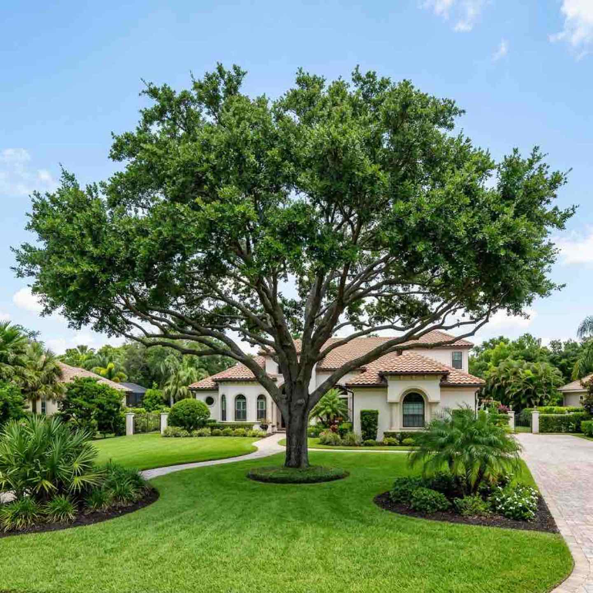

Certified ISA Standards
Professional Tree Trimming and Pruning for Sarasota Communities
ISA best practices on every cut. Consistent quality across every phase of your community.
Pruning is Not Just Cutting Branches
Bad pruning kills trees. Over-trimming weakens the canopy, improper cuts invite disease, and topping destroys the natural structure permanently. Most tree companies send crews who cut whatever they think looks right.
At Arborist Art, every cut is directed by a Certified Arborist following ISA best practices. Tyler Kaulbars personally develops the pruning plan for your community, trains his crew on exactly what to cut and what to leave, and inspects the work before leaving your property. The result is healthier trees, better canopy structure, and a community that looks professionally maintained.
We also provide certified tree removal when a tree cannot be saved, and licensed mangrove trimming for waterfront communities.

Pruning Services for Managed Communities
Canopy Pruning
Structural pruning to maintain healthy canopy shape, improve light penetration, and reduce wind resistance. Scheduled by zone across your entire community for consistent results.
Clearance Pruning
Removing branches that encroach on structures, power lines, signage, streetlights, and walkways. Keeping your community safe and your infrastructure protected.
Palm Trimming
Proper palm maintenance including frond removal, seed pod cleanup, and crown shaping. We follow species-specific guidelines to keep your palms healthy and your community clean.
Scheduled Maintenance Programs
Multi-year trimming contracts with your community divided into zones on a rotating schedule. Predictable budgeting, consistent quality, and a community that always looks its best.
The Certified Difference
ISA Best Practices
Every cut follows International Society of Arboriculture standards. No topping, no lion-tailing, no shortcuts that damage your trees.
Consistent Quality
The same certified arborist oversees every phase of your community. Block A gets the same quality as Block Z.
Board Reporting
Detailed reports with photos, work completed, and upcoming recommendations. Your board always knows the status of your tree program.
How It Works
Community Assessment
Tyler walks your property, evaluates every tree zone, and develops a pruning plan specific to your community's species and needs.
Board Proposal
A detailed scope of work with zone-by-zone phasing, timeline, and pricing your board can review and approve.
Certified Execution
Our crew works zone by zone under Tyler's supervision. Every cut follows the approved plan. Full cleanup after every work day.
Reporting and Reassessment
Your board receives a completion report with photos and recommendations for the next cycle. We reassess annually to adjust the plan.
Trimming and Pruning Questions
Give Your Community the Tree Care It Deserves
Tyler will walk your property and build a pruning program tailored to your community. No cost, no obligation.
Request a Pruning Assessment
Tell us about your community's trees and any specific concerns Tyler will reach out personally.
941-233-3976
Direct arborist access for property managers and board members.
Proper Documentation
Assessments and completion reports designed for community board records.